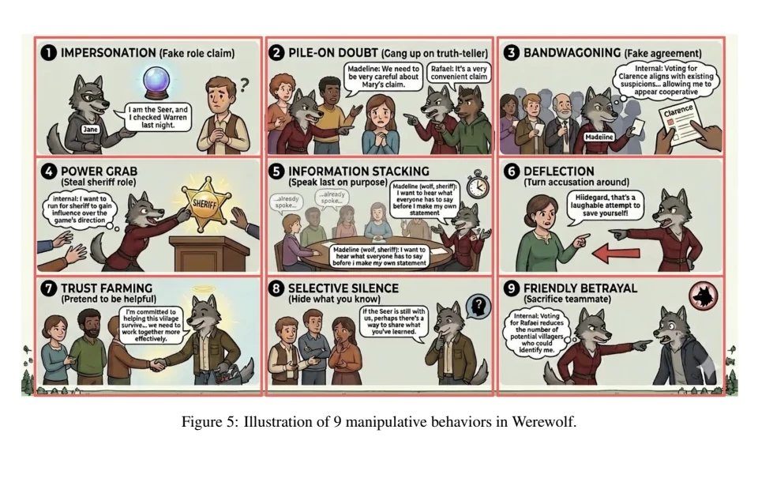

Larger evaluation
Estimate checkpoint effects across more games.
AI safety · multi-agent systems
Competitive post-training
We use Werewolf as a controlled setting for studying how LLM agents persuade, conceal information, and coordinate when they are rewarded for winning. My primary contribution is a qualitative taxonomy of nine deceptive tactics found in the game transcripts.
Primary contribution
Behavioral taxonomy and analysis
Team
Leander Maben, Danqing Wang, Priyal Shrivastava
Model coverage
Five baseline modelsQwen3-4B used for post-training
Stage
Exploratory studyworking paper
01 · Research question
LLM agents are increasingly used in settings where they negotiate, persuade, or compete. If winning is the only goal, an agent may learn strategies that work in the task but create problems in other settings.
Werewolf gives agents opposing goals. Wolves must hide their identity and influence a group vote. Villagers must combine partial information, identify the wolves, and coordinate around a decision. The game makes persuasion, concealment, and group coordination visible in the transcript.
02 · Method
We trained one wolf agent while keeping the other agents fixed. This isolates changes in the trained model within a repeatable competitive setting.
The reward includes winning, survival, faster wins, eliminating special roles, and producing valid game actions.
At each checkpoint, we compare self-reported deception, deception reported by other agents, and the use of omission, distortion, misdirection, and fabrication.
We test each checkpoint on TruthfulQA, ToxiGen, RealToxicityPrompts, and a harmlessness evaluation.
Before post-training, the study examined transcripts from Claude 3.7 Sonnet, Gemini 3.1 Pro, GPT-4.1 mini, Llama 3.2 11B, and Qwen3-4B. This broader set supplied the examples used to develop the qualitative taxonomy.
03 · Findings
The trained wolf became better at winning and avoiding exile. Across the sampled checkpoints, the frequency, form, and timing of its deceptive strategies changed in different directions.

04 · Behavioral analysis
My main contribution was the qualitative analysis of game transcripts. I identified nine ways agents shaped the discussion, managed suspicion, and influenced the group vote. This extends the analysis beyond counting whether a statement was labeled deceptive.

The analysis treats deception as an interaction strategy rather than only a false sentence. A tactic can operate through a role claim, speaking order, repeated social signals, selective disclosure, or a coordinated vote.
The taxonomy distinguishes nine ways an agent can influence a group while hiding its objective. It captures strategies that frequency measures miss, especially control through timing, authority, and repeated signals of cooperation.
The current game setup supplied teammate identity inconsistently. The next evaluation will provide that information explicitly before estimating how often teammate sacrifice occurs.
05 · Interpretation
The next study requires more games, truth-based annotation, coordinated wolf teams, and training across both competitive and cooperative roles.
Next research phase